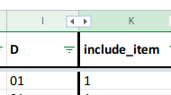

Spreadsheets
The spreadsheets that allow us to generate the different checklists are hosted on this google drive folder and we try to keep a back-up in the csv folder.
-
The neurovault spreadsheet is here
-
The PET spreadsheet is here
-
The eyetracker spreadsheet is here
-
The MRI spreadsheet is here
-
The M/EEG spreadsheet is here
The
download_csv.sh
bash script will directly download those spreadsheets as csv files into the
inputs/csv folder
To do
Here is a short list of the different things to keep in mind when working on one of the spreadsheet.
Each line must correspond to one checklist item that must have only one unambiguous item with an associated question. Any item that opens the possibility of a response of the form:
If A was used, then list the parameters B, C, D
Then it must be broken down into several questions:
1. Was A used?
2. If so, what parameter was used for B?
3. What parameter was used for C?
...
For each item:
-
make sure it has a name, preferred label, description: for some of those a formula in the spreadsheet should automatically take care of that
-
make sure that there is a clear specific and unambiguous question associated to this item
-
identify the response type expected
-
create a response choice list where needed
-
mark the item as high-priority to be in the next release of the app.
-
assess whether there is way to not expose users to that item (or restrict list of the response choices for that item) if it is not relevant to their use-case
Working with the spreadsheets
This describes some rules and tips when working with the spreadsheets.
Style guide
Where relevant we try to use snake_case and stick to lower case.
Hidden columns
If some columns do not appear, it is possible that they have been hidden by someone else. You will simply have to click on the double black arrow at the limit between columns to display them back.

Formatting
The MRI spreadsheet has some conditional formatting implemented so some cells will appear red when there is an error to be fixed (or if the cell is empty and should be filled). Some items that require more work might be manually highlighted in orange.
Filtering
If you want to only see certain rows, it is better to filter them rather than hide them.
The column headers can be used to filter which item to display: for example, the
activity_name column can be filtered using the arrow in the top cell in order
to see only the items corresponding to one or more main sections (e.g.,
"Acquisition", "Experimental design", "Preprocessing", etc.).
Formulas and automation
There is a certain level of automation built into those spreadsheets to fill in certain columns. For example, the preferred label of an item is generated from the item name by removing any underscore.
Given that some of the guidelines used as source material often had several sub and sub-sub-sections organized in a hierarchical fashion, this was in some cases used to generate the item names.
Below is an example how the item name for the MRI spreadsheet is determined by the content of the right-most non-empty column on the lef of the item column.
| item_name | |||
|---|---|---|---|
| Imaging type | imaging_type | ||
| Essential imaging parameters | All acquisitions | voxel dimension | voxel_dimension |
| Essential imaging parameters | Slice timing | slice_timing |
Spreadsheet content
Here follows a description of the columns' content.
Content common to all spreadsheets
The description of the columns common to all spreadsheet is described in the data dictionary in the inputs folder.
Each column is described by an element in the JSON data dictionarry.
"column_name": {
"LongName": "",
"VariableName": "name of the corresponding variable, if relevant, in the conversion scripts",
"Description": "",
"Levels": "describes the different possibilities in this column"
}
Extra columns
-
Software defaults columns (
spm_default,fsl_default) refer to the default value used for this item by a given software. -
Integration with other sources:
-
Brain Imaging Data Structure dataset: the
bids_*columns denote if information about this item can be found in a BIDS dataset and if so where. -
nidm_results: mention where information this item can be found in an NIDM results package -
neurovaultcollection: refers to the name of this item in a Neurovault collection
-
-
Meta-analysis: These columns denote whether or not each item could be important to evaluate studies for a meta-analysis.
-
use_case_meta-analysis- yes, include for meta-analyses
- no, exclude for meta-analyses
- maybe -
meta-analysis_comment
-
Percent of studies reporting the item
Comparison to Carp 2012
Some columns list the percentage of studies that reported each item.
For the MRI spreadsheet, this is taken from Carp, 2012.
-
in_Carp2012: name of the item in that paper -
percent_of_studies: percent of studies reporting the item. If the number is in bold, it was approximately extracted from one of the figures of the paper. (because it was not reported in the text of the article). -
percent_of_studies_anat: same as above but for the anatomical data
The Eyetracking spreadsheet percent_reported column also has numbers on the
frequency at which items are present in the literature (see the
preprint)